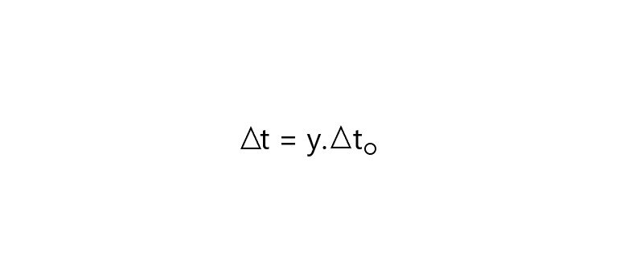
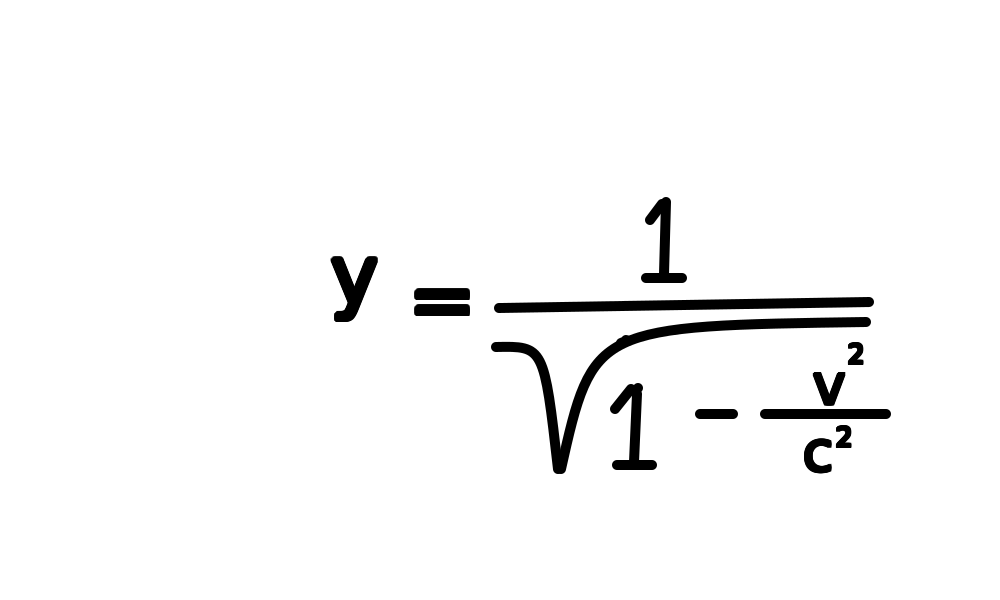

Esta teoria foi publicada em 1905 por Albert Einstein ,está teoria fala sobre a invariabilidade da luz no vácuo e da inexistencia de um referencia inercial absoluto
Conclusões
→A inexistencia do éter(meio que teoricamente ocupava todo o espaço)
→A velocidade da luz é o limite para os corpos no vácuo
→O príncipio da simultâniedade
Postulados da Teoria da Relatividade Restrita
1 - Príncipio da Relatividade Restrita
As leis da fisica são as mesmas para todos os observadores em todos os referenciais inerciais. Não existe um referencial inercial absoluto
2 - Príncipio de constância da velocidade da luz
A velocidade da luz no vácuo tem o mesmo valor(c)em todas as direções e em todos os referenciais inerciais
O que é a simultâniedade de eventos :
Por meio do princípio da simultaneidade, o tempo e o espaço passam a se comportar de forma relativa um com o outro, de maneira que o observador que se move a uma velocidade próxima à da luz percebe que o tempo passou mais rápido e a distância diminuiu em comparação ao referencial do observador externo, ocorrendo, então, a dilatação do tempo e a contração da distância.
→ Contração do comprimento

Lo é a distância ou comprimento do corpo em repouso.
L é a distância ou comprimento do corpo em movimento.
γ (gama) é o fator de Lorentz.
→ Dilatação do tempo
Δt é o tempo em que o corpo esteve em movimento.
γ (gama) é o fator de Lorentz.
Δt0 é o tempo em que o corpo permanece parado.
→ Relação Geral entre massa e energia

E é a energia medida em Joule (J) de uma ou mais particulas.
m é a massa medida em Kg de uma ou mais particulas.
c é a velocidade da luz no vácuo.
→ Fator de Lorentz
γ (gama) é o fator de Lorentz.
c é a velocdade da luz no vácuo
v é a velocidade do observador em movimento
A Teoria da Relatividade Restrita é utilizada no cotidiano para :
→ Calibragem de GPS
→ Desenvolvimento de tecnologias nucleares
→ Investigação de partículas que viajam com velocidades próximas a da luz
→ Explicar os campos magnéticos, funcionamento de televisores,etc